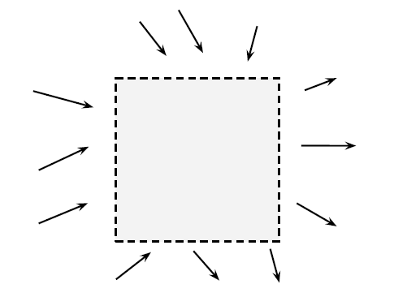
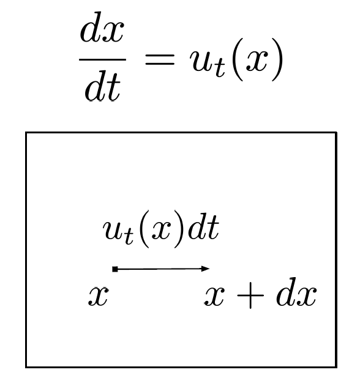
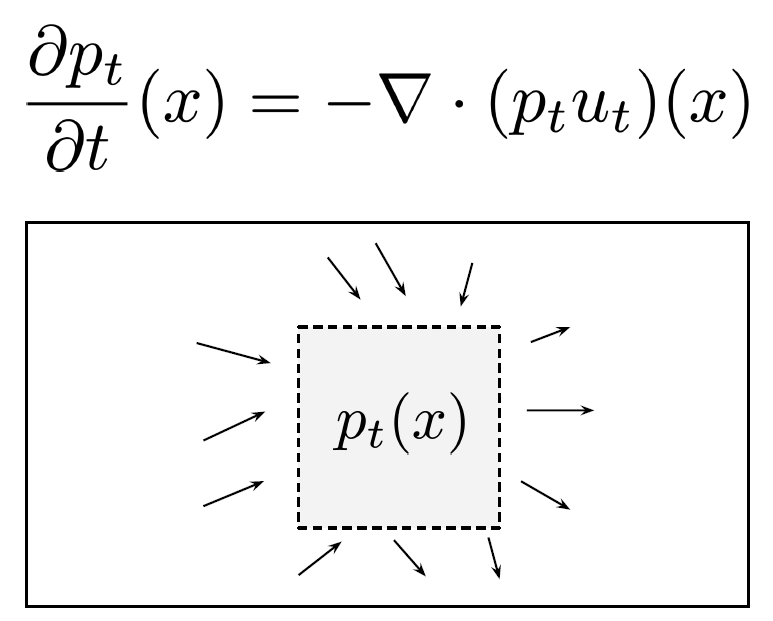
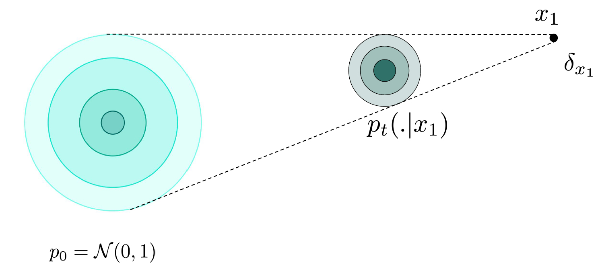
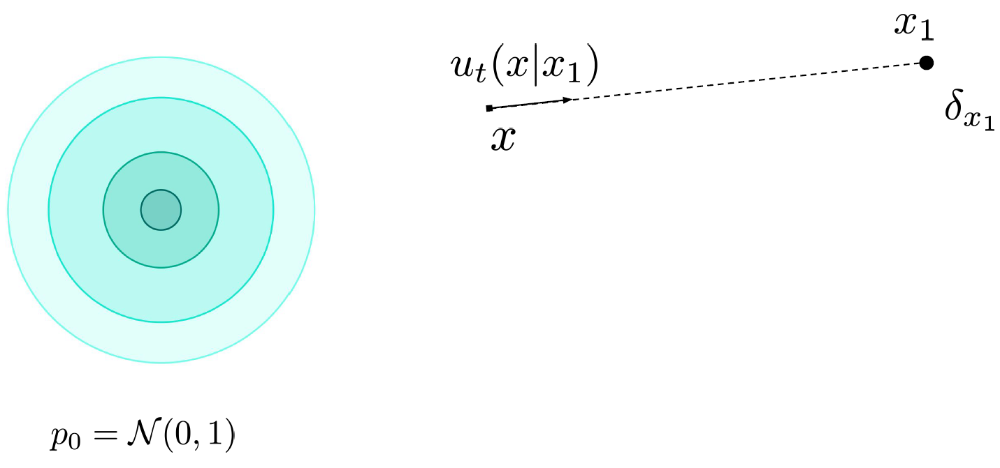
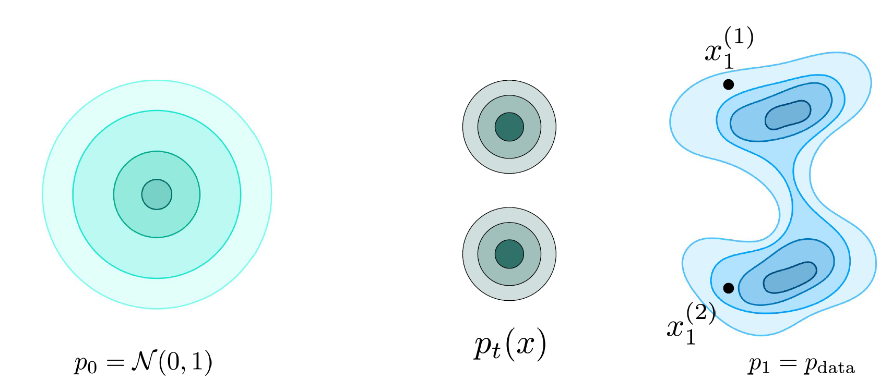
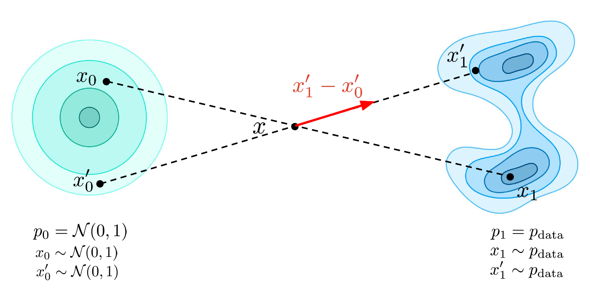
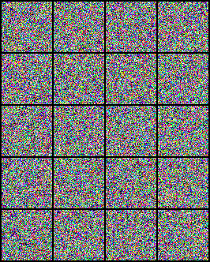

import torch
import torch.nn as nn
import torch.nn.functional as F
class FlowMatching(nn.Module):
def __init__(self, velocity_predictor):
super().__init__()
self.velocity_predictor = velocity_predictor
def flow_lerp(self, x_1):
bsz = x_1.shape[0]
t = torch.rand((bsz,)).to(x_1.device)
t_broadcast = t.view(bsz, 1, 1, 1)
x_0 = torch.randn_like(x_1)
# the flow-matching lerp
x_t = (1 - t_broadcast) * x_0 + t_broadcast * x_1
return x_0, x_t, t
@torch.no_grad()
def sample(self, shape, num_steps):
bsz = shape[0]
x_t = torch.randn(shape, device=self.velocity_predictor.device)
delta_t = torch.tensor([1/num_steps] * bsz).to(x_t.device).view([bsz, *([1] * len(x_t.shape[1:]))])
for i in range(num_steps):
t = torch.tensor([i/num_steps] * bsz).to(x_t.device)
predicted_velocity = self.velocity_predictor(x_t, t)
x_t = x_t + predicted_velocity * delta_t
return x_t
def loss(self, x_1):
x_0, x_t, t = self.flow_lerp(x_1)
target_velocity = x_1-x_0
predicted_velocity = self.velocity_predictor(x_t, t)
return torch.nn.functional.mse_loss(target_velocity, predicted_velocity)Flow Matching
Generative AI
Notes on Flow Matching
TipReferences
- Minimal PyTorch implementation accompanying these notes:
NoteReading map
- Motivation
- Flow Models
- Earlier attempts to learn the velocity
- Flow Matching
- Implementation
Motivation
Objective and solution
- Objective: Given a complex data distribution how can we go from simple distribution to complex data distribution.
- Solution: Use vector field, which will guide to go towards target distribution P_1 = P_{data} from initial distribution P_0 = N(0, I)
Some terminology
- Trajectory x_t: path taken by the observation for time t \epsilon [0, 1]
- For example:
- x_0: from P_0 to P_1
- x_t: from P_0 to P_t
- For example:
- Flow \psi(x_0): Collections of trajectories x_t which start from different x_0
- Probability path p_t(x): Probability distribution of x_t at time t.
- Vector field u_t(x): where to move(direction, speed) at time t and location x
Velocity vs Score
Note
- Velocity is like giving instructions to self-driving car at point x and time t whereas score is like compass in the car, which tells where the high probability regions are.
Perspective of a single sample with ODE
- dx = u_t(x)dt
- where:
- dx is change in sample position
- u_t(x) is velocity field at location x and time t
- dt is change in time
- Trajectory starting from x_0 (u_t(x_0)) is unique if velocity u_t(x) is lipschitz continuous
TipLipschitz Continuity
- A function f is lipschitz continuous, when we have some constant M, (x, y) from space of interest such that:
- ||f(x) - f(y)|| \leq M.||x - y||
- which means f needs to be continuous but not in a very dramatic way
Perspective of a distribution via “Mass Conservation”

Tip
- \frac{\delta p_t}{\delta t}(x) = Inflow of density - Outflow of density
- Where:
- \frac{\delta p_t}{\delta t}(x) is temporal evolution of density at time t at a particular location
Intuition behind divergence in 1D
Note
- divergence \geq 0 (things are coming out more than coming in)
- \frac{\delta f}{\delta x} \geq 0
- divergence \leq 0 (things are coming in more than going out)
- \frac{\delta f}{\delta x} \leq 0
- Generalization for n dimensions:
- div(f) = \triangledown . f = \sum_{i=1}^{n}\frac{\delta f}{\delta x_i}
- Which function should we select as f?
- Suppose we have:
- u_t(x_1) = u_t(x_2)
- p_t(x_1) < p_t(x_2)
- and we want:
- ||f(x_1)|| < ||f(x_2)||
- One option would be Vector field u_t(x)?
- But we want to transfer from high density region more as compared to lower density region which is not possible using vector fields since they have only direction and magnitude not probability distribution
- So probability flux
- (p_t u_t)(x)
- p_t is probability density
- u_t is velocity
- which finally gives
- \frac{\delta p_t}{\delta t}(x) = -\triangledown(p_t u_t)(x)
- Suppose we have:
Two perspectives involving the velocity
- Single Sample(Micro level)

- x_0 \sim p_0
- \frac{dx_t}{dt} = u_t(x)
- Distribution (Macro level)

- x_t \sim p_t
- Vector field u_t generates the probability path p_t(x)
- We want to go from p_0 to p_1 and for that we will need vector fields which will actually allows to do the mapping
Flow Models
Goal and strategy
- Goal: Map x_0 \sim p_0 \rightarrow x_1 \sim p_1
- Strategy:
- Training: Estimate u_t(x) for all time t and all locations x via u^{\theta}_t(x)
- Inference: Sample from initial distribution and solve numerically the ODE using the learned vector field u^{\theta}_t(x)
- \hat{x_1} = x_0 + \int_{0}^{1}u^{\theta}_t(x)dt
Earlier attempts to learn the velocity
Why this was harder
- Goal: Learn the vector field u_t(x) via maximum likelihood
- Idea: Transform continuity equation to:
- \frac{d}{dt} log p_t(x) = - \triangledown . u_t(x)
- Then simulate ODE at training time to maximize likelihood:
- logp^\theta_1(x_1) = logp^\theta_0(x_0) + \int_{0}^{1} - \triangledown .u^{\theta}_t(x)dt
- Limitation: Training is slow and expensive because of the integral, that’s why flow matching was introduced
Flow Matching
Core idea
- Goal: Estimate the vector field with u^\theta_t(x) instead of maximizing the likelihood
- L_{FM} = \mathbb{E}_{t, x}[||u^\theta_t(x) - u_t(x)||^2]
- But we don’t have access to u_t(x)
Why conditional paths help
How do we get this vector field, which will allow us to go from p_0 to p_1
Let’s assume p_{data} is composed of points from training data, so instead of finding out vector field for initial distribution to final distribution, we make it easier and look for vector field from initial distribution to some point in data distribution i.e. Initial Distribution \rightarrow Dirac Distribution
TipDirac Distribution
- Something which is deterministic unlike general distributions
- \delta_{x_1}(x) = 0 \: if \: x \neq x_1
- \delta_{x_1}(x) = + \infty \: if x = x_1
Conditional probability path
- p_t(x \mid x_1) = N(tx_1, (1-t)^2I)

Conditional vector path
- One of the vector fields generating probability path
- u_t(x \mid x_1) = \frac{x_1 - x}{1-t}

Conditional vector fields and probability path
- Conditional Vector Fields [u_t(. \mid x_1)] generates Conditional Probability Path [p_t(. \mid x_1)]
- Using continuity equation, we can derive:
- if x_0 \sim p_0(. \mid x_1)
- \frac{dx_t}{dt} = u_t(x_t \mid x_1) then
- x_t \sim p_t(. \mid x_1)
- Since p_t(. \mid x_1) = N(tx_1, (1-t)^2I)
- x_t = tx_1 + (1-t)x_0 where x_0 \sim N(0, I)
- u_t(x_t \mid x_1) = \frac{x_1-[tx_1 + (1-t)x_0]}{1-t} = x_1 - x_0
Marginal probability path
Tip
- p_t is an aggregation of p_t(. \mid x^{(i)}_1)

- p_t(x) = \int p_t(x \mid x_1)p_{data}(x_1)dx_1
- From above definition, we can say that:
- At t=0, p_{t=0} = p_0 where p_{t=0} is marginal probability path for t=0 and p_0 is initial probability distribution
- At t=1, p_{t=1} = p_1 where p_{t=1} is marginal probability path for t=1 and p_1 is target probability distribution
Marginal vector field
Note
- It is an aggregation of the u_t(. \mid x^{(i)}_1) i.e. conditional vector field
- u_t(x) = \int u_t(x \mid x_1) \frac{p_t(x \mid x_1) p_{data}(x_1)}{p_t(x)}dx_1
- where \frac{p_t(x \mid x_1) p_{data}(x_1)}{p_t(x)} = p(x_1 \mid x) i.e. Posterior mean which specifies where should we go given where we are right now.
Marginal vector fields and probability path
- Marginal Vector Fields [u_t] generates Marginal Probability Path [p_t]
- Using continuity equation, we can derive:
- if x_0 \sim p_0
- \frac{dx_t}{dt} = u_t(x_t) then
- x_t \sim p_t
Deriving Conditional Flow Matching
- L_{FM} = \mathbb{E}_{t, x}[||u^\theta_t(x) - u_t(x)||^2] is equivalent to L_{CFM} = \mathbb{E}_{t, x_1, x}[||u^\theta_t(x) - u_t(x \mid x_1)||^2]
- Check out this to see why these two are equivalent
- Now we have a tractable loss
Training Procedure
- Sample noise x_0 \sim N(0, I), clean image x_1 \sim p_{data} and timestep t \sim U[0, 1]
- Get noised image as: x_t = (1-t)x_0 + tx_1
- Use x_t and t to predict x_1-x_0 via u^\theta_t(x_t)
- Compute loss L = ||u^\theta_t(x_t) - (x_1-x_0)||^2 and backpropagate through u^\theta
Inference
- Sample noise x_0 \sim N(0, I)
- Use Euler to numerically solve the ODE
- x_{t_i} = x_{t_{i-1}} + u^\theta_{t_{i-1}}(x_{t_{i-1}})(t_i - t_{i-1})
- Obtain final image x_1
Issues with directly using Flow Matching
Warning

- As we can see in above figure, two vector fields are intersecting each other, which means our vector field approximator will learn somewhat average of these two
- And at inference time we will not be able to go to x_1 or x^{'}_1, we will go somewhere in between.
- And also there is no linearity as it was in case of score based models, where we can deterministically compute the linear part
Issues with Flow Matching
Tip
- Learning Complexity
- Crossing paths leads to different learned rewiring
- Problem even when paths are not strictly crossing
- Inefficiency at inference
- Paths are not straight: needs more steps for approximation
- No magic solver to save the day
ReFlow
Note
- So we got ReFlow, which tries to make paths more straighter
- Reflow procedure
- Train initial model which is called as 1-rectified flow
- Use to create data pairs
- D_{train} = U\{z_0, z_1\}, where z_0 \sim N(0, I) and z_1 = \psi^\theta_1(z_0)
- Train on paired data, which is called as 2-rectified flow
- Repeat 2-3 times as desired
Implementation
